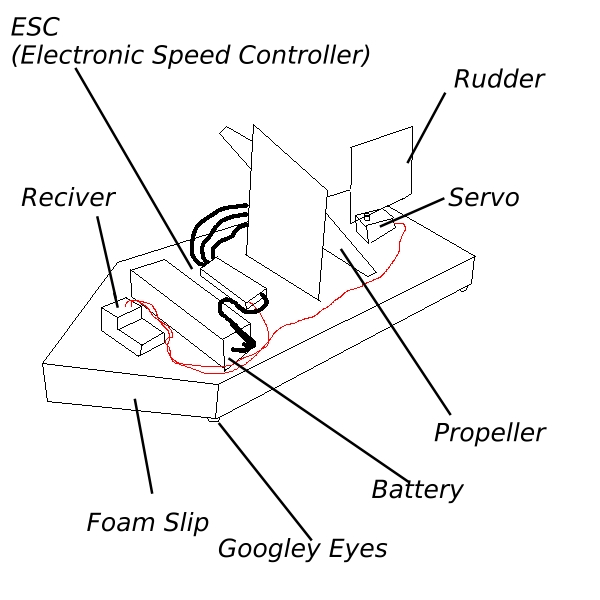

RC project: Slipper


Homepage
Hobbies
├─ Microscopy
├─ Photography
└─ Biology
Engineering
├─ Resources
└─ Personal Projects
├─ RC Systems
│ ├─ MK I: Slipper
│ ├─ MK II: Snark
│ ├─ MK III: Headcrab
│ └─ MK IV: Houndeye
├─ 3D printer
└─ Rocket Analysis
This Website
Changelog
Contact Me

Slipper
Remote control Systems
For a while I had wanted to do some practical engineering, I was in A-level, just doing theory with nothing else to do. I wanted to learn engineering, to make things and gain actual experience. After browsing the internet, I found RC electronics. This was the perfect project for me, as the electronics were very simple yet effective and versitlie, allowing me to focus on what I valued most: The design. I wanted to do mechanial engineering. Gears, belts and wheels. Not get into the nitty gritty of electronic. (Although I would also do electronic projects in the future, but that's a subject for a different page). So after purchasing some electronics off the internet, I decided to whip up something quick and easy. No 3D modeling or complex design. Just some cheap materials, creativity and duct tape. I wanted to get a feel for the components, to set them up correctly and to have a bit of fun. By my Dad's suggestion, I made a slip. A wedge of foam with a propeller and rudder. I made it in about an hour. And so, Slipper was born. Unfortunatly I could not find the pictures and videos of slipper we took, however I do have a good memory of it. Pictured on the right is a simple diagram of Slipper. It's base was a wedge of foam, cut from a bit of packaging. Two pieces of thin balsa wood was used: One to hold the motor and propeller upright and one to serve as the rudder. The propeller was from an old drone, stuck to the motor with a bit of tape and glue. The rudder was attached to the servo with a length of wire, each end slid into the wood grain for an attachment point. The battery, ESC and reciver were slapped onto the front half, and all of it was secured with a mixutre of string, duct tape and electrical tape.
Slipper immediatley ran into some problems. Firstly: The friction between the carpet and foam was way too high, causing it to barely move. Next we tried a hardwood floor. This worked... but we could go faster. To reduce surface area, thus the friction, four googley eyes were stuck to the bottom. These were incredible, and at times it got so fast it was hard to control!
New ideas:
- Using an RC system
- Using propellers as a form of propulsion
- Using "skis" to allow for motion
Lessons learned:
- Propellers are difficult to control, and don't leave much room for manuverability. Wheels will most likely be preferable
- RC system control and sensitivity: Doing this alowed me to get a feel for how an RC system handled, along with how to correctly set one up